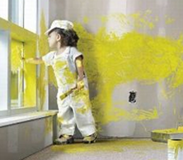

О нас
«Философия интерьера» — это объединение профессионалов в области отделки, дизайна и строительства
Очень важно, чтобы ремонт квартир соответствовал вкусам заказчиков максимально, полностью воплощая все их пожелания в действительности
Начиная эпопею под названием домашний ремонт, у каждого есть несколько вариантов. Так, видно что, самый простой и наиболее «правильный» согласно распространенному мнению, и является работа самостоятельно.
«Да и зачем? — спросят многие, — ведь можно же взять отпуск, в конце концов, и не тратить попусту свои деньги неведомо на что и неведомо кому». Безусловно, так доля логики и здравого смысла здесь присутствует.
Действительно, такой ремонт квартир обойдется вам на порядок дешевле, чем, если бы вы обратились к ремонтным бригадам, да и свои нервы лишний раз не придется тратить, если вдруг что-то выйдет не так как нужно. Винить-то некого в таком случае.
И как ни странно, есть у такого «замечательного» способа отремонтировать квартиру и свои небольшие минусы. Так, отпуска вам может и не хватить на то, чтобы завершить работу в срок, а затяжное пребывание в пыльной и шумной от работы инструментов квартире не только не прибавит вам хорошего настроения
Ремонт квартиры лучше всего доверить профессионалам:
- у нас только качественные материалы;
- работы выполняются быстро, профессионально и в срок;
- выполнение ремонта квартиры под ключ
Доверьте ремонт квартиры нам:
- Выполнение ремонта квартиры под ключ;
- Нас только качественные материалы;
- Работы выполняются быстро, профессионально и в срок